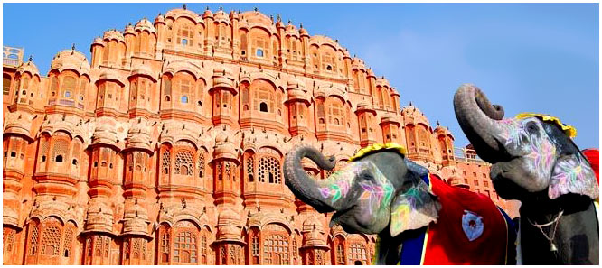
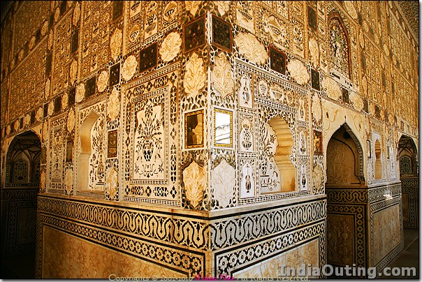

It was in 1799 that the Kachhwaha Rajput ruler, Sawai Pratap Singh, grandson of Maharaja Sawai Jai Singh who built Jaipur, constructed Hawa Mahal as a continuation of the Royal City Palace. Sawai Pratap Singh's devotion to Lord Krishna is evident in the palace's construction as it resembles the lord's crown. Though many reasons are cited behind the construction of the fort, Purdah system followed by the Rajputs is said to be one of the main causes. During those days, Rajput royal women did not appear in public or in front of strangers.
However, they were keen to follow the day-to-day events and royal processions occurring on the streets. It is for their benefit that the Hawa Mahal was built, complete with small windows and screened balconies. This gave the women a sense of freedom, without appearing in public.
Hawa Mahal, designed as a beehive castle with small windows, has a height of 50 feet from its base. This structure, erected on a thin shield or podium approximately fifty feet high, has walls less than a foot thick. Constructed of red and pink sandstones by Lal Chand Ustad, Hawa Mahal is famous for its windows or 'Jharokhas' which enable free circulation of air within the structure.
Its entrance is a door which leads to a spacious courtyard surrounded by two-storey buildings on three sides. Of the five storeys of the Mahal, the top three storeys have the thickness of a single room while the bottom storeys have courtyards. The interior of the Hawa Mahal is stark and plain with passages and pillars reaching to the top storey. The building does not have stairs to reach the upper floors; the storeys are connected by slopes. From Hawa Mahal, you have an excellent view of the city. The monument also has an archeological museum.
There are numerous attractions around Hawa Mahal such as the famed Jantar Mantar, Govind Devji temple, Amer Fort, Nahargarh Fort, Ram Niwas Bagh, BM Birla Planetarium, Jain Temple, Statue Circle, Sisodia Rani Garden and so on. Hawa Mahal, which is the quintessence of Rajput architecture, stands high in the heart of Jaipur city as a prominent attraction.

The Amer Fort, situated in Amber, 11 kilometers from Jaipur, is one of the most famous forts of Rajasthan. Amer, originally, was the capital of the state before Jaipur. It is an old fort, built in 1592 by Raja Man Singh. This fort is also very popularly known as the Amer Palace. The Amer Fort was built in red sandstone and marble and the Maotha Lake adds a certain charm to the entire Fort.